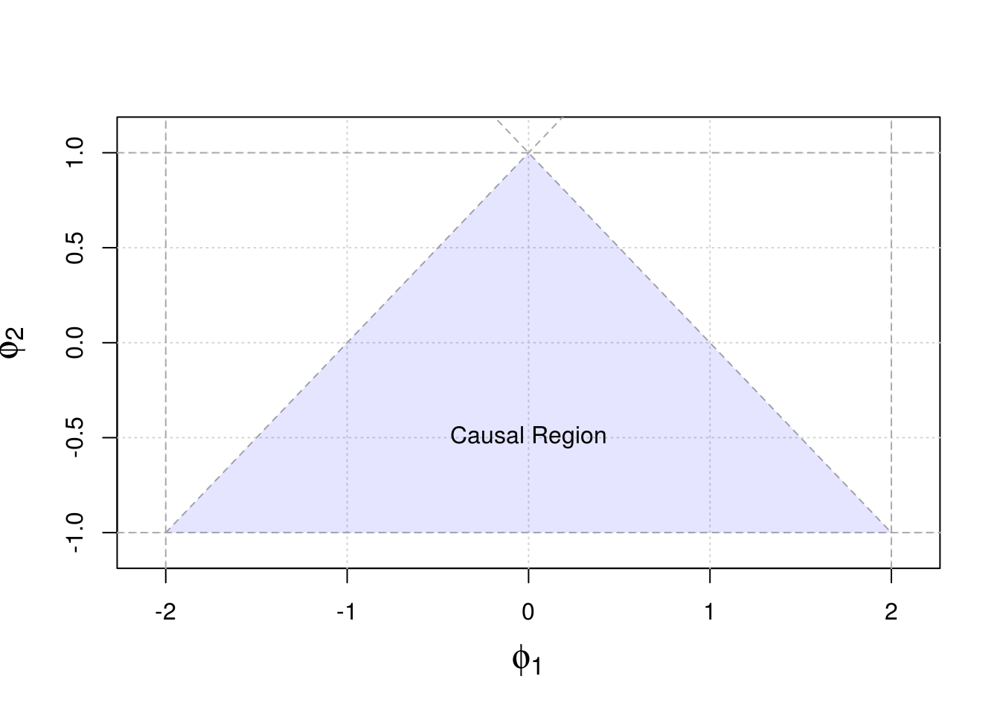
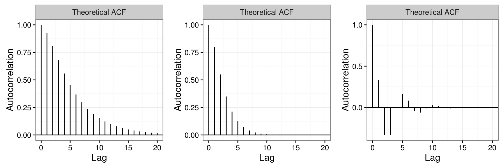

3.2 Autoregressive Models
The class of autoregressive models is based on the idea that previous values in the time series are needed to explain current values in the series. For this class of models, we assume that the \(p\) previous observations are needed for this purpose and we therefore denote this class as AR(\(p\)). In the previous chapter, the model we introduced was an AR(1) in which only the immediately previous observation is needed to explain the following one and therefore represents a particular model which is part of the more general class of AR(p) models.
In general, we will assume that the expectation of the process \(({X_t})\), as well as that of the following ones in this chapter, is zero. The reason for this simplification is that if \(\mathbb{E} [ X_t ] = \mu\), we can define an AR process around \(\mu\) as follows:
\[X_t - \mu = \sum_{i = 1}^p \left(\phi_i X_{t-i} - \mu \right) + W_t,\]
which is equivalent to
\[X_t = \mu^{\star} + \sum_{i = 1}^p \phi_i X_{t-i} + W_t,\]
where \(\mu^{\star} = \mu (1 - \sum_{i = 1}^p \phi_i)\). Therefore, to simplify the notation we will generally consider only zero mean processes, since adding means (as well as other deterministic trends) is easy.
A useful way of representing AR processes is through the backshift operator introduced in the previous section and is as follows
\[\begin{aligned} {X_t} &= {\phi_1}{X_{t - 1}} + ... + {\phi_p}{y_{t - p}} + {w_t} \\ &= {\phi_1}B{X_t} + ... + {\phi_p}B^p{X_t} + {W_t} \\ &= ({\phi_1}B + ... + {\phi_p}B^p){X_t} + {W_t} \\ \end{aligned},\]
which finally yields
\[(1 - {\phi _1}B - ... - {\phi_p}B^p){X_t} = {W_t},\]
or, in abbreviated form, can be expressed as
\[\phi(B){X_t} = W_t.\]
We will see that \(\phi(B)\) is important to establish the stationarity of these processes and is called the autoregressive operator. Moreover, this quantity is closely related to another important property of AR processes called causality. Before formally defining this new property, we consider the following example, which provides an intuitive illustration of its importance.
Example 3.8 (Non-causal AR(1)) Consider a classical AR(1) model with \(|\phi| > 1\). Such a model could be expressed as
\[X_t = \phi^{-1} X_{t+1} - \phi^{-1} W_t = \phi^{-k} X_{t+k} - \sum_{i = 1}^{k-1} \phi^{-i} W_{t+i}.\]
Since \(|\phi| > 1\), we obtain
\[X_t = - \sum_{i = 1}^{\infty} \phi^{-j} W_{t-j},\]
which is a linear process and therefore is stationary. Unfortunately, such a model is useless because we need the future to predict the future and such processes are called non-causal.3.2.1 Properties of AR models
In this section we discuss the main properties of AR(\(p\)) processes. We first consider the causality of these models which has already been introduced in the previous paragraphs and then discuss the autocorrelation (and partial autocorrelation) of AR(\(p\)) models.
3.2.1.1 Causality
In the previous section we already introduced the idea of causal time series model and therefore let us now introduce this concept in a more formal manner.
Definition 3.7 (Causality of AR models) An AR(p) model is said to be causal, if the time series \((X_t)\) can be written as a one-sided linear process:
\[X_t = \sum_{j = 0}^{\infty} \psi_j W_{t-j} = \frac{1}{\phi(B)} W_t = \psi(B) W_t,\]
where \(\phi(B) = \sum_{j = 0}^{\infty} \phi_j B^j\), \(\sum_{j=0}^{\infty}|\phi_j| < \infty\) and \(\phi_0 = 1\).As discussed earlier this condition implies that only the past values of the time series can explain the future values of it, and not vice versa. As discussed in the previous section, linear processes are (weakly) stationary processes and therefore causality directly implies (weak) stationarity. However, it might be difficult and not obvious to show the causality of AR(\(p\)) processes by using the above definitions directly, thus the following property is particulary useful in practice.
The proof of this result is omitted but can (for example) be found in Appendix B of Shumway and Stoffer (2010). Moreover, it can be seen how there is no solution to the above equation if \(\phi(z) = 0\) for \(|z| \leq 1\) and therefore an AR(\(p\)) is causal if and only if \(\phi(z) \neq 0\) for \(|z| \leq 1\). A condition for this to be respected is for the roots of \(\phi(z) = 0\) to lie outside the unit circle.
Before further discussing the properties of AR(\(p\)) models we consider the following two examples which discuss the causality (and stationarity) of AR(2) models.
Example 3.9 (Transforming an AR(2) into a linear process) Given the following AR(2) \(X_t = 1.3X_{t-1} - 0.4X_{t-2} + W_t\) one could wonder if this process can be written as a one-sided linear process as in Definition 3.7. This can be done using the following approach:
Step 1: The AR operator of this model can be expressed as:
\[\phi(z) = 1 - 1.3z + 0.4z^2 = (1 - 0.5z)(1 - 0.8z) ,\]
and has roots \(2 > 1\) and \(1.25 > 1\). Thus, we should be able to covert it into linear process.
Step 2: From Theorem ((???)) we know that if AR process has all its roots lie outside the unit circle, we can write \(X_t = \phi^{-1}(B)W_t\) and “inverse” the autoregressive operator \(\phi(B)\) as follows:
\[\phi^{-1}(z) = \frac{1}{(1 - 0.5z)(1 - 0.8z)} = \frac{c_1}{(1 - 0.5z)} + \frac{c_2}{(1 - 0.8z)} = \frac{c_2(1 - 0.5z) + c_1(1 - 0.8z)}{(1 - 0.5z)(1 - 0.8z)} ,\]
since we can think of the above equation is valid for any \(z\), we will solve the following system of equations to get \(c_1\) and \(c_2\),
\[\begin{cases} c_1 + c_2 &= 1\\ -0.5 c_2 - 0.8 c_1 &= 0 \end{cases} \implies \begin{cases} c_1 &= -\frac{5}{3}\\ c_2 &= \frac{8}{3}, \end{cases} \]
and, we obtain
\[\phi^{-1}(z) = \frac{-5}{3(1 - 0.5z)} + \frac{8}{3(1 - 0.8z)} .\]
Step 3: Using Geometric series, i.e. \(a \sum_{k = 0}^{\infty}r^k = \frac{a}{1-r}, \mbox{ if } |r| < 1\), we have
\[\begin{cases} \frac{-5}{3(1 - 0.5z)} &= \frac{-5}{3} \sum_{j = 0}^{\infty}0.5^jz^j , \mbox{ if } |z| < 2\\ \frac{8}{3(1 - 0.8z)} &= \frac{8}{3} \sum_{j = 0}^{\infty}0.8^jz^j , \mbox{ if } |z| < 1.25. \end{cases}\]
This allows to expressed \(\phi^{-1}(z)\) as
\[\phi^{-1}(z) = \sum_{j = 0}^{\infty} \left[ \frac{-5}{3} (0.5)^j + \frac{8}{3} (0.8)^j \right] z^j, \mbox{ if } |z| < 1.25 .\]
Step 4: Finally, we obtain \[X_t = \phi^{-1}(B)W_t = \sum_{j = 0}^{\infty} \left[ \frac{-5}{3} (0.5)^j + \frac{8}{3} (0.8)^j \right] B^j W_t = \sum_{j = 0}^{\infty} \left[ \frac{-5}{3} (0.5)^j + \frac{8}{3} (0.8)^j \right] W_{t-j}, \] which verifies that the AR(2) is causal (and stationary).Example 3.10 (Causal conditions for an AR(2) processes) We already know that an AR(1) is causal with the simple condition \(|\phi_1| < 1\). It could seem natural to believe that an AR(2) should be causal (implies stationary) with the conditon: \(|\phi_i| < 1, \, i = 1,2\), however, this is not the case. Indeed, an AR(2) can be expressed as
\[X_t = \phi_1 X_{t-1} + \phi_2 X_{t-2} + W_t = \phi_1 B X_t + \phi_2 B^2 X_t + W_t,\]
corresponding to the following autoregressive operator:
\[\phi(z) = 1 - \phi_1 z - \phi_2 z^2.\]
Therefore, the process is causal when the roots of \(\phi(z)\) lies outside of the unit circle. Letting \(z_1\) and \(z_2\) denote those roots, we impose the following constraints to ensure the causality of the model:
\[\begin{aligned} |z_1| &> 1, \;\;\;\; \text{where} \;\; &z_1 = \frac{\phi_1 + \sqrt{\phi_1^2 + 4\phi_2}}{-2 \phi_2},\\ |z_2| &> 1, \;\;\;\; \text{where} \;\; &z_2 = \frac{\phi_1 - \sqrt{\phi_1^2 + 4\phi_2}}{-2 \phi_2}, \end{aligned}\] note that \(z_1\) and \(z_2\) can be complex values.
Thus we can represent \(\phi_1\) and \(\phi_2\) by \(z_1\) and \(z_2\), \[\begin{aligned} \phi_1 = (z_1^{-1} + z_2^{-1}),\\ \phi_2 = -(z_1 z_2)^{-1}. \end{aligned}\]
Moreover we have the following equivalent condition for causality:
\[\begin{cases} |z_1| &> 1\\ |z_2| &> 1, \end{cases}\] if and only if \[\begin{cases} \phi_1 + \phi_2 &< 1\\ \phi_2 - \phi_1 &< 1\\ |\phi_2| &< 1. \end{cases}\]
We can show “if”
\(\phi_1 + \phi_2 = \frac{1}{z_1} + \frac{1}{z_2} - \frac{1}{z_1z_2} = \frac{1}{z_1}\left( 1 - \frac{1}{z_2} \right) + \frac{1}{z_2} < 1 - \frac{1}{z_2} + \frac{1}{z_2} = 1\), (since \(\left( 1 - \frac{1}{z_2} \right) > 0\))
\(\phi_2 - \phi_1 = - \frac{1}{z_1z_2} - \frac{1}{z_1} - \frac{1}{z_2} = - \frac{1}{z_1}\left( \frac{1}{z_2} + 1 \right) - \frac{1}{z_2} < \frac{1}{z_2} + 1 - \frac{1}{z_2} = 1\), (since \(\left( \frac{1}{z_2} + 1 \right) > 0\))
\(|\phi_2| = \frac{1}{|z_1||z_2|} < 1\).
We can also show “only if”
Since \(z_1 = \frac{\phi_1 + \sqrt{\phi_1^2 + 4\phi_2}}{-2 \phi_2}\) and \(\phi_2-1 < \phi_1 < 1-\phi_2\), then \(z_1^2 = \frac{\left(\phi_1 + \sqrt{\phi_1^2 + 4\phi_2}\right)^2}{4 \phi_2^2} < \frac{\left((1-\phi_2) + \sqrt{(1-\phi_2)^2 + 4\phi_2}\right)^2}{4 \phi_2^2} = \frac{4}{4 \phi_2^2} \leq 1\).
Since \(z_2 = \frac{\phi_1 - \sqrt{\phi_1^2 + 4\phi_2}}{-2 \phi_2}\) and \(\phi_2-1 < \phi_1 < 1-\phi_2\), then \(z_2^2 = \frac{\left(\phi_1 - \sqrt{\phi_1^2 + 4\phi_2}\right)^2}{4 \phi_2^2} < \frac{\left((\phi_2-1) + \sqrt{(\phi_2-1)^2 + 4\phi_2}\right)^2}{4 \phi_2^2} = \frac{4 \phi_2^2}{4 \phi_2^2} = 1\).Finally, the causal region of an AR(2) is depicted on the figure below.

3.2.1.2 Autocorrelation
In this section we discuss the autocorrelation of (causal) AR(\(p\)) processes. Before considering the general case of an AR(\(p\)), we revisit Example 3.9 and derive the ACF of the AR(2) model presented in this example.
Example 3.11 (Autocorrelation of an AR(2)) Considering the same model as in Example 3.9, i.e. \(X_t = 1.3X_{t-1} - 0.4X_{t-2} + W_t\), we can derive the ACF using the following steps:
Step 1: Find the homogeneous difference equation with respect to the ACF \(\rho(h)\), which in this case is given by: \[\rho(h) - 1.3\rho(h-1) + 0.4\rho(h-2) = 0, \mbox{ } h = 1,2,...\] and the initial conditions are \(\rho(0) = 1\) and \(\rho(-1) = \frac{13}{14}\). Note that the above equation is an homogenous difference equation of order 2.
Step 2: Using the results of Example 3.9, we have: \[\phi(z) = 1 - 1.3z + 0.4z^2 = (1 - 0.5z)(1 - 0.8z) ,\] and the roots of this equation are given by \(z_1 = 2 > 1\) and \(z_2 = 1.25 > 1\). Moreover, since \(z_1\) and \(z_2\) are real and distinct, we obtain (since it corresponds to the solution of an homogenous difference equation of order 2):
\[\rho(h) = c_1 z_1^{-h} + c_2 z_2^{-h}.\]
Step 3: Solve \(c_1\) and \(c_2\) based on two initial conditions found in Step 1, i.e. \[\begin{cases} \rho(0) = c_1 + c_2 = 1\\ \rho(-1) = 2c_1 + 1.25c_2 = \frac{13}{14}, \end{cases},\] implying that \(c_1 = -\frac{3}{7}\) and \(c_2 = \frac{10}{7}\). The ACF for this model is therefore given by \[\rho(h) = -\frac{3}{7}2^{-h} + \frac{10}{7}\left(\frac{5}{4}\right)^{-h} .\]The graph depicts the ACF of this process:
library(exts)
autoplot(theo_acf(AR(phi = c(1.3, -0.4))))
The method used in the previous is only applicable for AR(2) with roots that are distinct and real, which is true when \(\phi_2 > - \phi^1/4\). In the case where \(\phi_2 = - \phi^1/4\), the autoregressive operator has single root and \(\rho(h)\) can be obtain by determining (using inital conditions) the constants \(c_1\) and \(c_2\) of the following expression:
\[\rho(h) = z_1^{-h} \left(c_1 + c_2 h\right).\] When \(\phi_2 > - \phi^1/4\) the roots are complexe conjugate pairs and solution is given by:
\[\rho(h) = c_1 |z_1|^{-h} \cos \left(h \theta + c_2\right), \] where the constants depends on inital conditions, while \(\theta = \text{arg}(z_1)\).
Therefore, we have that \(\rho(h) \to 0\) exponential fast as \(h \to \infty\) and when \(\phi_2 > - \phi^1/4\) \(\rho(h)\) goes to zero in an sinusoidal fashion. This behaviour is illustrated in the next example.
Example 3.12 (Autocorrelation AR(2) Processes) Consider the following models:
\[\begin{aligned} \text{Model 1}: \;\;\; X_t &= X_{t-1} - 0.25 X_{t-2} + W_t \\ \text{Model 2}: \;\;\; X_t &= 0.5 X_{t-1} + 0.25 X_{t-2} + W_t \\ \text{Model 3}: \;\;\; X_t &= -1.5 X_{t-1} - 0.75 X_{t-2} + W_t. \end{aligned} \]
It is easy to verify the first one has real distrinct roots, the second a unique real root while the latter has complexe roots. This is illustrated in the figure which depicts the causal region of an AR(2) that has been separated between models with real and complexe roots.Next we present an example to show how to derive the ACF for general causal AR(p) model. It is much more complicated than what we did for AR(2).

The ACF of these models are represented on the figure below. As expected the three models corresponds to an ACF that dempends expoentially fast but only Model 3 exibits a sinusoidal features.
library(gridExtra)
# Define models
m1 = AR(phi = c(1, -0.25))
m2 = AR(phi = c(0.5,0.25))
m3 = AR(phi = c(-1.5, -0.75))
# Theoretical ACF
acf1 = theo_acf(m1)
acf2 = theo_acf(m2)
acf3 = theo_acf(m3)
# Plot ACFs
a1 = autoplot(acf1)
a2 = autoplot(acf2)
a3 = autoplot(acf3)
grid.arrange(a1, a2, a3, nrow = 1)
Next, we consider the ACF for a general causal AR(\(p\)) model. Unfortunatelty, this is far more complicated than our previous example.
Example 3.13 (Autocorrelation of an AR(\(p\))) Recall that the AR(\(p\)) models can be formally represented as follows \[{X_t} = {\phi_1}{X_{t - 1}} + ... + {\phi_p}{X_{t - p}} + {W_t},\] where \(W_t\) is a (Gaussian) white noise process with variance \(\sigma^2\).
There are two ways to derive the ACF for general AR(\(p\)) models. For the first one, since we assume our AR(\(p\)) model is causal, we can write it as a one-sided linear process: \(X_t = \sum_{j = 0}^{\infty} \psi_j W_{t-j}\), then the autocovariance function \(\gamma(h) = cov(X_{t+h},X_t) = \sigma^2 \sum_{j=0}^{\infty} \psi_j \psi_{j+h}\), for \(h \geq 0\). The difficulty of this method is to solve the \(\psi\)-weights. Treating AR(p) as a special case of ARMA(p,q), we can let the MA polynomials \(\theta(z) = 1\) and solve the \(\psi\)-weights by matching the coefficients in \(\phi(z)\psi(z) = \theta(z)\).
For the second method, we can also use the procedure we used for AR(2). That is finding a homogeneous difference equation with respect to ACF \(\rho(h)\), and solve it directly. To do so we need following steps.
Step 1: Find the homogeneous difference equation with repsect to the ACF \(\rho(h)\).
Firstly verify whether our model is causal. If it is then we have, \[\rho(h) - \phi_1\rho(h-1) - \cdots - \phi_p\rho(h-p) = 0, \mbox{ } h \geq p. \]
Step 2: Solve the roots of the associated AR polynomials.
The polynomials can be written as: \[\phi(z) = 1 - \phi_1z - \cdots - \phi_pz^p .\]
Suppose the polynomials have \(r\) distinct roots, and let \(m_j\) denoted the number of replicates of \(z_j\), such that \(m_1 +m_2 + \cdots +m_r = p\).
Then the general solution of the homogeneous difference equation is \[\rho(h) = z_1^{-h}P_1(h) + z_2^{-h}P_2(h) + \cdots + z_r^{-h}P_r(h), \mbox{ } h \geq p,\] where \(P_j(h)\) is the polynomial in \(h\) of degree \(m_j - 1\).
Step 3: Solve every \(P_j(h)\) based on \(p\) given initial conditions on \(\rho(h)\).
Remark: Since the AR(\(p\)) model is causal, the roots we obtained in step 2 should be outside of the unit circle (i.e. \(|z_i| > 1\), for \(i = 1, \cdots, r\)). Then the absolute value of the general solution \[|\rho(h)| = \left|\frac{P_1(h)}{z_1^{h}} + \frac{P_2(h)}{z_2^{h}} + \cdots + \frac{P_r(h)}{z_r^{h}}\right| \leq \left|\frac{P_1(h)}{z_1^{h}}\right| + \left| \frac{P_2(h)}{z_2^{h}}\right| + \dots + \left|\frac{P_r(h)}{z_r^{h}}\right| \leq \frac{r \left|P_r(h)\right|}{\min_{j = 1, \dots, r} \left|z_j \right|^{h}},\]
from the right hand side of the last inequality, we can find the rate of convergence would be dominated by \(\frac{1}{\min_{j = 1, \dots, r} \left|z_j \right|^{h}}\). Thus the ACF \(\rho(h)\) will goes to zero exponentially as \(h \to \infty\).EXAMPLE MISSING HERE + DISCUSSION ON LIMITS OF ACF
3.2.1.3 Partial autocorrelation of AR models
Remark From the above defination we can think of the partial correlation \(\phi_{hh}\) as the correlation between the residual of \(X_{t+h}\) after removing its best linear predictor on the vector space spanned by \(\{ X_{t+1}, \dots, X_{t+h-1} \}\) and the residual of \(X_t\) after reomving its best linear predictor on the same vector space. Similar to the linear regression, after projecting the residuals should be independ with the vector space spanned by \(\{ X_{t+1}, \dots, X_{t+h-1} \}\).
We will discuss about the best linear predictor in the section Forecasing, here we just mention how to obtain the best linear predictor. Given a time serie \(X_1, X_2, \dots, X_t\) with zero mean, the best linear predictor of \(X_{t+h}\) can be written as \(\hat{X}_{t+h} = \sum_{j=1}^t \alpha_j X_j\) such than it satisfies the prediction equations: \[ \mathbb{E}(X_{t+h} - \hat{X}_{t+h}) = 0, \] and \[ \mathbb{E} [(X_{t+h} - \hat{X}_{t+h})X_j ] = 0, \mbox{ for } i = 1, \dots, t.\] According to the projection theorem, we can show that satisfying the prediction equations is equivalent to minimizing the mean square error \(\mathbb{E}(X_{t+h} - \hat{X}_{t+h})\). Thus we have two equivalent to obtain the best linear predictor.
Example 3.14 (PACF of AR(1)) Consider a casual AR(1) model \({X_t} = \phi {X_{t - 1}} + {W_t},\) We have, \[\phi_{11} = \corr(X_{t+1}, X_t) = \rho(1) = \phi,\] and \[\phi_{22} = \corr(X_{t+2} - \hat{X}_{t+2}, X_t - \hat{X}_t),\] Next, we find \(\hat{X}_t\) and \(\hat{X}_{t+2}\). Since \(X_{t+1}\) is the only random between \(X_t\) and \(X_{t+2}\), \(\hat{X}_t\) and \(\hat{X}_{t+2}\) are the best linear predictors on the vector space spaned by \(X_t\), we can obtain them by minimizing the MSE. \[\mathbb{E}(X_{t+2} - \hat{X}_{t+2})^2 = \mathbb{E}(X_{t+2} - \beta_1 X_{t+1})^2 = \gamma(0) - 2\beta_1 \gamma(1) + \beta_1^2 \gamma(0),\] Then by minimizing the MSE, we have \(\beta_1 = \frac{\gamma(1)}{\gamma(0)} = \phi\).
Similarily, by minimizing \[\mathbb{E}(X_{t} - \hat{X}_{t})^2 = \mathbb{E}(X_{t} - \beta_2 X_{t+1})^2 = \gamma(0) - 2\beta_2 \gamma(1) + \beta_2^2 \gamma(0),\] we have \(\beta_2 = \frac{\gamma(1)}{\gamma(0)} = \phi\).
Or equivalently we can use the prediction equations. Thus we have \[\mathbb{E}[(X_{t+2} - \hat{X}_{t+2})X_{t+1}] = \mathbb{E}[(X_{t+2}X_{t+1} - \beta_1 X_{t+1}^2)] = \gamma(1) - \beta_1 \gamma(0) = 0,\] and \[\mathbb{E}[(X_{t} - \hat{X}_{t})X_{t+1}] = \mathbb{E}[(X_{t}X_{t+1} - \beta_2 X_{t+1}^2)] = \gamma(1) - \beta_2 \gamma(0) = 0,\] Thus we can get the same solutions.
Therefore, \[\phi_{22} = \corr(X_{t+2} - \phi X_{t+1}, X_t - \phi X_{t+1}) = \corr(W_{t+2}, X_t - \phi X_{t+1}) = 0,\] note that the last equation is based on casuality.Example 3.15 (PACF of AR(p)) In this example we would like to show that the PACF characterize the order of AR(p) models. That is when \(h > p\), the PACF \(\phi_{hh} = 0\). Suppose a causal AR(p) model, \(X_{t+h} = \sum_{j=1}^p \phi_j X_{t+h-j} + W_{t+h}\), we want to calculate \(\phi_{hh}\).
The best linear predictor of \(X_{t+h}\) is \[\hat{X}_{t+h} = \mathbb{E}\left[X_{t+h}|X_t, \dots, X_{t+h-1}\right] = \mathbb{E}\left[\sum_{j=1}^p \phi_j X_{t+h-j} + W_{t+h}|X_t, \dots, X_{t+h-1}\right] = \sum_{j=1}^p \mathbb{E}\left[\phi_j X_{t+h-j}|X_t, \dots, X_{t+h-1}\right] = \sum_{j=1}^p \phi_j X_{t+h-j}.\] Thus when \(h > p\), \[ \phi_{hh} = corr(X_{t+h} - \hat{X}_{t+h}, X_t - \hat{X}_t) = corr(W_{t+h}, X_t - \hat{X}_t) = 0. \]3.2.2 Estimation of AR(\(p\)) models
Given the above defined properties of the AR(\(p\)) models, we will now discuss how these models can be estimated, more specifically how the \(p+1\) parameters can be obtained from an observed time series. Indeed, a reliable estimation of these models is necessary in order to interpret and describe different natural phenomena and/or forecast possible future values of the time series.
A first approach builds upon the earlier definition of the AR(p) as being a linear process. Recall that \begin{equation} X_t = \sum_{j = 1}^{p} \phi_j X_{t-j} + W_t \end{equation} which delivers the following autocovariance function \begin{equation} \gamma(h) = cov(X_{t+h}, X_t) = cov(\sum_{j = 1}^{p} \phi_j X_{t-j} + W_{t+h}, X_t) = \sum_{j = 1}^{p} \phi_j \gamma(h-j), \mbox{ } h \geq 0. \end{equation} Rearranging the above expressions we obtain the following general equations \begin{equation} \gamma(h) - \sum_{j = 1}^{p} \phi_j \gamma(h-j) = 0, \mbox{ } h \geq 1 \end{equation} and, recalling that \(\gamma(h) = \gamma(-h)\), \begin{equation} \gamma(0) - \sum_{j = 1}^{p} \phi_j \gamma(j) = \sigma_w^2. \end{equation}We can now define the Yule-Walker equations.
These estimators have the following asymptotic properties.
Property: Consistency and Asymptotic Normality of Yule-Walker estimators The Yule-Walker estimators for a causal AR(p) model have the following asymptotic properties:
\begin{equation*} \sqrt{T}(\hat{\mathbf{\phi}}- \mathbf{\phi}) \xrightarrow{\mathcal{D}} \mathcal{N}(\mathbf{0},\sigma_w^2\Gamma_p^{-1}) \text{and} \hat{\sigma}_w^2 \xrightarrow{\mathcal{P}} \sigma_w^2 . \end{equation*} Therefore the Yule-Walker estimators have an asymptotically normal distribution and the estimator of the innovation variance is consistent. Moreover, these estimators are also optimal for AR(p) models, meaning that they are also efficient. However, there exists another method which allows to achieve this efficiency also for general ARMA models and this is the maximum likelihood method. Considering an AR(1) model as an example, and assuming without loss of generality that the expectation is zero, we have the following representation of the AR(1) model \begin{equation*} X_t = \phi X_{t-1} + W_t \end{equation*} where \(|\phi|<1\) and \(W_t \overset{iid}{\sim} \mathcal{N}(0,\sigma_w^2)\). Supposing we have observations issued from this model \((x_t)_{t=1,...,T}\), then the likelihood function for this setting is given by \begin{equation*} L(\phi,\sigma_w^2) = f(\phi,\sigma_w^2|x_1,...,x_T) \end{equation*} which, for an AR(1) model, can be rewritten as follows \begin{equation*} L(\phi,\sigma_w^2) = f(x_1)f(x_2|x_1)\cdot \cdot \cdot f(x_T|x_{T-1}). \end{equation*} If we define \(\Omega_t^p\) as the information contained in the previous \(p\) observations to time \(t\), the above can be generalized for an AR(p) model as follows \begin{equation*} L(\phi,\sigma_w^2) = f(x_1,...,x_p)f(x_{p+1}|\Omega_{p+1}^p)\cdot \cdot \cdot f(x_T|\Omega_{T-1}^p) \end{equation*} where \(f(x_1,...,x_p)\) is the joint probability distribution of the first \(p\) observations. A discussion on how to find \(f(x_1,...,x_p)\) will be presented in the following paragraphs based on the approach to find \(f(x_1)\) in the AR(1) likelihood. Going back to the latter, we know that \(x_t|x_{t-1} \sim \mathcal{N}(\phi x_{t-1},\sigma_w^2)\) and therefore we have that \begin{equation*} f(x_t|x_{t-1}) = f_w(x_t - \phi x_{t-1}) \end{equation*} where \(f_w(\cdot)\) is the distribution of \(w_t\). This rearranges the likelihood function as follows \begin{equation*} L(\phi,\sigma_w^2) = f(x_1)\prod_{t=2}^T f_w(x_t - \phi x_{t-1}) \end{equation*} where \(f(x_1)\) can be found through the causal representation \begin{equation*} x_1 = \sum_{j=0}^{\infty} \phi^j w_{1-j} \end{equation*} which implies that \(x_1\) follows a normal distribution with zero expectation and a variance given by \(\frac{\sigma_w^2}{(1-\phi^2)}\). Based on this, the likelihood function of an AR(1) finally becomes \begin{equation*} L(\phi,\sigma_w^2) = (2\pi \sigma_w^2)^{-\frac{n}{2}} (1 - \phi)^2 \exp \left(-\frac{S(\phi)}{2 \sigma_w^2}\right) \end{equation*} with \(S(\phi) = (1-\phi)^2 x_1^2 + \sum_{t=2}^T (x_t -\phi x_{t-1})^2\). Once the derivative of the logarithm of the likelihood is taken, the minimization of the negative of this function is usually done numerically. However, if we condition on the initial values, the AR(p) models are linear and, for example, we can then define the conditional likelihood of an AR(1) as \begin{equation*} L(\phi,\sigma_w^2|x_1) = (2\pi \sigma_w^2)^{-\frac{n-1}{2}} \exp \left(-\frac{S_c(\phi)}{2 \sigma_w^2}\right) \end{equation*} where \begin{equation*} S_c(\phi) = \sum_{t=2}^T (x_t -\phi x_{t-1})^2 . \end{equation*} The latter is called the conditional sum of squares and \(\phi\) can be estimated as a straightforward linear regression problem. Once an estimate \(\hat{\phi}\) is obtained, this can be used to obtain the conditional maximum likelihood estimate of \(\sigma_w^2\) \begin{equation*} \hat{\sigma}_w^2 = \frac{S_c(\hat{\phi})}{(n-1)} . \end{equation*} The estimation methods presented so far are standard ones for these kind of models. Nevertheless, if the data suffers from some form of contamination, these methods can become highly biased. For this reason, some robust estimators are available to limit this problematic if there are indeed outliers in the observed time series. A first solution is given by the estimator proposed in Kunsch (1984) who underlines that the MLE score function of an AR(p) is given by \begin{equation*} \kappa(\mathbf{\theta}|x_j,...x_{j+p}) = \frac{\partial}{\partial \mathbf{\theta}} (x_{j+p} - \sum_{k=1}^p \phi_k x_{j+p-k})^2 \end{equation*} where \(\theta\) is the parameter vector containing, in the case of an AR(1) model, the two parameters \(\phi\) and \(\sigma_w^2\) (i.e. \(\theta = [\phi \,\, \sigma_w^2]\)). This delivers the estimating equation \begin{equation*} \sum_{j=1}^{n-p} \kappa (\hat{\mathbf{\theta}}|x_j,...x_{j+p}) = 0 . \end{equation*} The score function \(\kappa(\cdot)\) is clearly not bounded, in the sense that if we arbitrarily move a value of \((x_t)\) to infinity then the score function also goes to infinity thereby delivering a biased estimation procedure. To avoid that outlying observations bias the estimation excessively, a bounded score function can be used to deliver an M-estimator given by \begin{equation*} \sum_{j=1}^{n-p} \psi (\hat{\mathbf{\theta}}|x_j,...x_{j+p}) = 0, \end{equation*} where \(\psi(\cdot)\) is a function of bounded variation. When conditioning on the first \(p\) observations, this problem can be brought back to a linear regression problem which can be applied in a robust manner using the robust regression tools available in R such asrlm(...) or lmrob(...). However, another available tool in R which can applied directly without conditioning also for general ARMA models is the gmwm(...) function which, by specifying the option robust = TRUE. This function makes use of a quantity called the wavelet variance (denoted as \(\nu\)) which is estimated robustly and then used to retrieve the parameters \(\theta\) of the time series model. The robust estimate is obtained by solving the following minimization problem
\begin{equation*}
\hat{\theta} = \underset{\theta \in \Theta}{\argmin} (\hat{\nu} - \nu{\theta})^T\Omega(\hat{\nu} - \nu{\theta}),
\end{equation*}
where \(\hat{\nu}\) is the robustly estimated wavelet variance, \(\nu{\theta}\) is the theoretical wavelet variance and \(\Omega\) is positive definite weighting matrix. Below we show some simulation studies where we present the results of the above estimation procedures in absence and in presence of contamination in the data.
INSERT SIMULATIONS
For all the above methods, it would be necessary to understand how “precise” their estimates are. To do so we would need to obtain confidence intervals for these estimates and this can be done mainly in two manners:
- using the asymptotic distribution of the parameter estimates;
- using parametric bootrstrap.
The first approach consists in using the asymptotic distribution of the estimators presented earlier to deliver approximations of the confidence intervals which get better as the length of the observed time series increases. Hence, for example, if we wanted to find a 95% confidence interval for the parameter \(\phi\), we would use the quantiles of the normal distribution (given that all methods presented earlier present this asymptotic distribution). However, this approach can present some drawbacks, one of which is there behaviour when the parameters are close to the boundaries of the parameter space. Let us take the example of an AR(1) to illustrate this problematic and suppose that \(\phi = 0.99 < 1\) and \(\sigma_W^2\). It can be seen that the parameter \(\phi\) respects the condition for stationarity but is very close to its boundary. The code below computes the confidence interval for \(\phi\) using the asymptotic normal distribution.
## [1] 0.9840441 1.0068569It can be seen how the confidence interval contains values that make the AR(1) non-stationary (i.e. values of \(\phi\) larger than 1). For this purpose, the approach based on parametric bootstrap provides a viable solution. Indeed, parametric bootstrap takes the estimated parameter values and uses them in order to simulate from an AR(1) based on these parameter values. For each simulation the parameters are estimated again and saved. Finally, the empirical quantiles of the saved estimated parameter values provide a confidence interval which does not suffer from boundary problems. The code below gives an example of how this confidence interval is built based on the same estimation procedure but using parametric bootstrap (using 500 bootstrap replicates).
## 2.5% 97.5%
## 0.8764531 0.9989982In this case, it can be observed that the confidence interval lies entirely within the boundaries of the parameter space.
References
Shumway, R.H., and D.S. Stoffer. 2010. Time Series Analysis and Its Applications: With R Examples. Springer Texts in Statistics. Springer New York. https://books.google.com/books?id=NIhXa6UeF2cC.